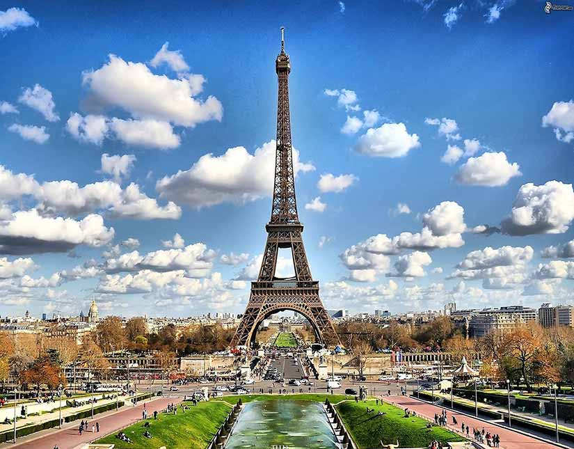
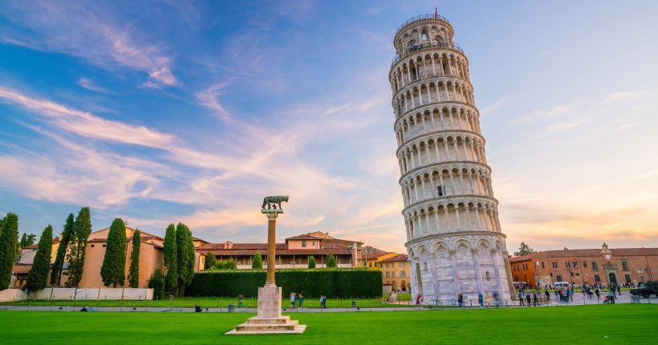
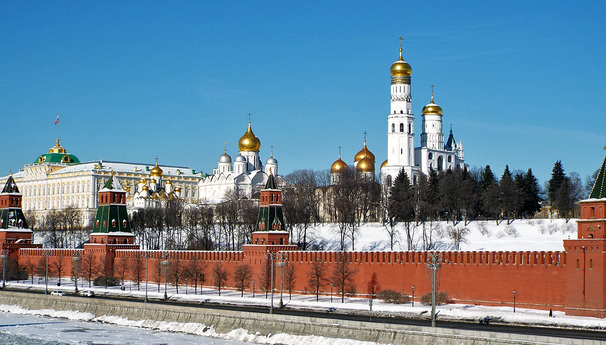

|  |
Torre Eiffel(em francês: Tour Eiffel, /tuʀ ɛfɛl/) é uma torre de treliça de ferro forjado no Champ de Mars, em Paris, França. Tem o nome do engenheiro Gustave Eiffel, cuja empresa projetou e construiu a torre. Localmente apelidada de "Dama de Ferro" (em francês: La dame de fer), foi construída de 1887 a 1889 como a peça central da Exposição Universal de 1889 e foi inicialmente criticada por alguns dos principais artistas e intelectuais franceses por seu design, mas tornou-se um ícone cultural global da França e uma das estruturas mais reconhecidas do mundo.[1] A Torre Eiffel é o monumento pago mais visitado do mundo; 6,91 milhões de pessoas subiram na torre em 2015. Foi designado um monumento histórico em 1964 e foi nomeado parte do Patrimônio Mundial pela UNESCO ("Paris, Margens do Sena") em 1991.[2] |
Torre de PisaA torre inclinada de Pisa (em italiano Torre pendente di Pisa), ou simplesmente Torre de Pisa, é um campanário (campanile ou campanário autônomo) da catedral da cidade italiana de Pisa. Está situada atrás da catedral, e é a terceira mais antiga estrutura na praça da Catedral de Pisa (Campo dei Miracoli), depois da catedral e do baptistério. Embora destinada a ficar na vertical, a torre começou a inclinar-se para sudeste logo após o início da construção, em 1173, devido a uma fundação mal construída e a um solo de fundação mal consolidado, que permitiu à fundação ficar com assentamentos diferenciais. A torre atualmente se inclina para o sudoeste. |
 |
|  |
Kremlin MoscovoKremlin Moscovo (português europeu) ou Moscou (português brasileiro) (russo: Моско́вский Кремль, tr. Moskovskiy Kreml), geralmente designado o Kremlin, é um complexo fortificado no centro da capital russa, nas margens do rio Moskva ao sul, com a Catedral de São Basílio e a Praça Vermelha a leste e o Jardim de Alexandre a oeste. É o mais conhecido dos kremlins (cidadelas russas) e inclui cinco palácios, quatro catedrais e uma muralha com torres. O complexo serve como a residência oficial do Presidente da Federação Russa. O nome Kremlin significa "fortaleza dentro de uma cidade",[1] e muitas vezes também é usado como uma metonímia para se referir ao governo da Federação Russa em um sentido semelhante à forma como "a Casa Branca" é usada para se referir ao Gabinete Executivo do Presidente dos Estados Unidos, assim como "o Planalto" também é por vezes empregado como designação ao Gabinete do Presidente da República do Brasil. O termo já tinha sido usado para se referir ao governo da União Soviética (1922-1991) e seus mais altos membros (tais como os secretários-gerais, primeiros-ministros, presidentes, ministros e comissários). |